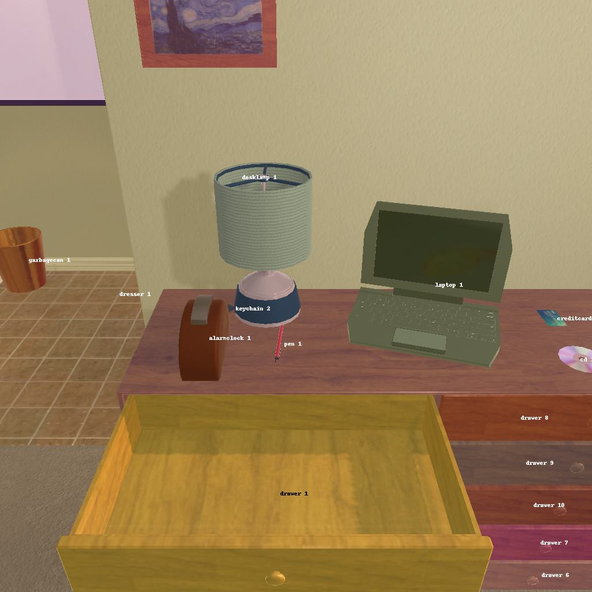
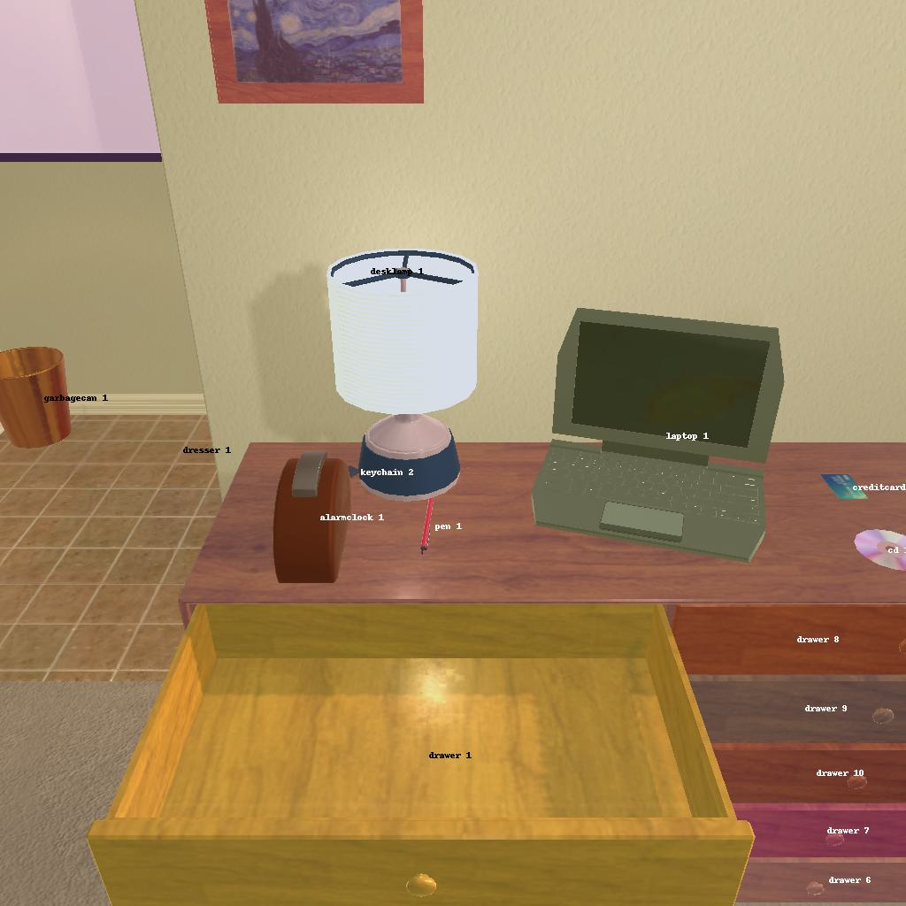
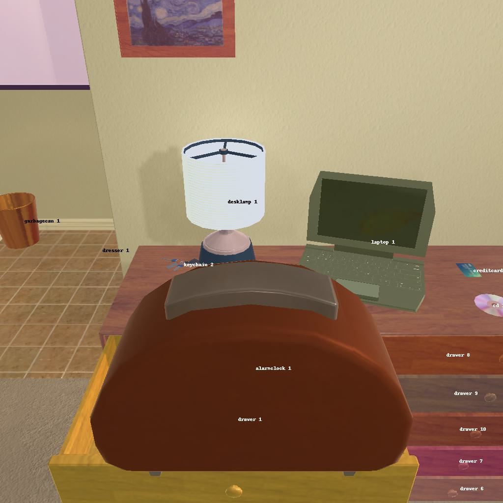

---------------------------------------------------------task: 1---------------------------------------------------------
--------------------------------------------------------------------------------------------------------------------------------------------------------------------
--------------------------------------------------------------------------------------------------------------------------------------------------------------------
Step:--------------------------------------------------------------------------5-------------------------------------------------------------------------------
----------------------------------------
VLM Prompt:
Image1:
Image2:
Image3:
**Instruction**
1. Analyze the provided image to identify all visible household objects, focusing on those relevant to the task description "examine the alarmclock with the desklamp."
2. Use the analysis of the image and the task hint "The agent must find an object of the desired type, locate and turn on a light source with the desired object in-hand." to answer the question: what is the most reasonable action in the choices for the task description "examine the alarmclock with the desklamp"?
4. Decide and write the answer using the template: The answer is: (i): , where i is the real number. If there is no desired object in the image, search every place based on **Initial Observation** to find the object. And if no one is exactly correct, choose a similar answer.
**Initial Observation**
You are in the middle of a room. Looking quickly around you, you can see bed (1), dresser (1), drawer (1-10), garbagecan (1), shelf (1-7)
**Answer Choices**
(1): go to bed 1
(2): go to dresser 1
(3): go to drawer 2
(4): go to drawer 3
(5): go to drawer 4
(6): go to drawer 5
(7): go to garbagecan 1
(8): go to drawer 6
(9): go to drawer 7
(10): go to drawer 8
(11): go to drawer 9
(12): go to drawer 10
(13): go to shelf 1
(14): go to shelf 2
(15): go to shelf 3
(16): go to shelf 4
(17): go to shelf 5
(18): go to shelf 6
(19): go to shelf 7
(20): close drawer 1
(21): take laptop 1 from drawer 1
(22): take alarmclock 1 from drawer 1
(23): take cd 1 from drawer 1
(24): take creditcard 1 from drawer 1
(25): take pen 1 from drawer 1
(26): take keychain 2 from drawer 1
(27): examine drawer 1
**Answer**
Let's think step by step by following the instructions.
----------------------------------------
----------------------------------------
Original Response:
First, we need to identify all visible household objects that are relevant to the task description "examine the alarmclock with the desklamp." In the images provided, we can see an alarmclock labeled as "alarmclock 1" and a desklamp labeled as "desklamp 1" on the dresser.
Next, based on the task hint, the agent must find an object of the desired type, which is the alarmclock, locate and turn on a light source with the desired object in-hand. Since the alarmclock is already on the dresser and the desklamp is right next to it, the most reasonable action would be to turn on the desklamp in order to examine the alarmclock. However, there is no action listed in the answer choices that directly states "turn on the desklamp."
Since there is no exact action to turn on the desklamp, we need to choose a similar answer. The closest action that would lead to examining the alarmclock with the desklamp would be to take the alarmclock, which is action (22): take alarmclock 1 from drawer 1. Even though the alarmclock is not inside drawer 1, this action indicates that the agent will interact with the alarmclock, which is a step towards the task of examining it with the desklamp.
The answer is: (22): take alarmclock 1 from drawer 1.
----------------------------------------
----------------------------------------
>>> Refine Original VLM Response and Get Pure Action: take alarmclock 1 from drawer 1
----------------------------------------
-----------------------------------------------------------------
Running time: 13.854068517684937 seconds
Total Money: 0.6952100000000001
-----------------------------------------------------------------
-----------------------------------------------------------------
Text Observation:You pick up the alarmclock 1 from the drawer 1.
-----------------------------------------------------------------
SUCCEED